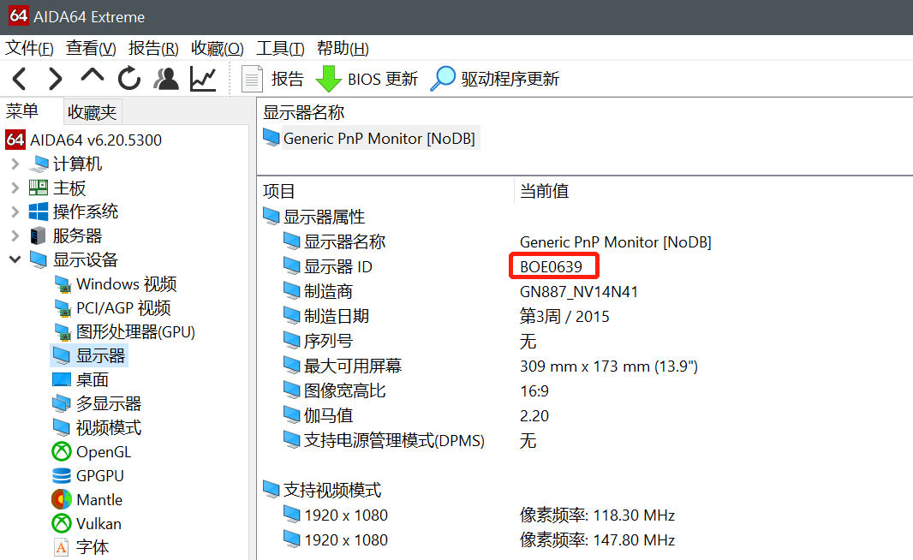
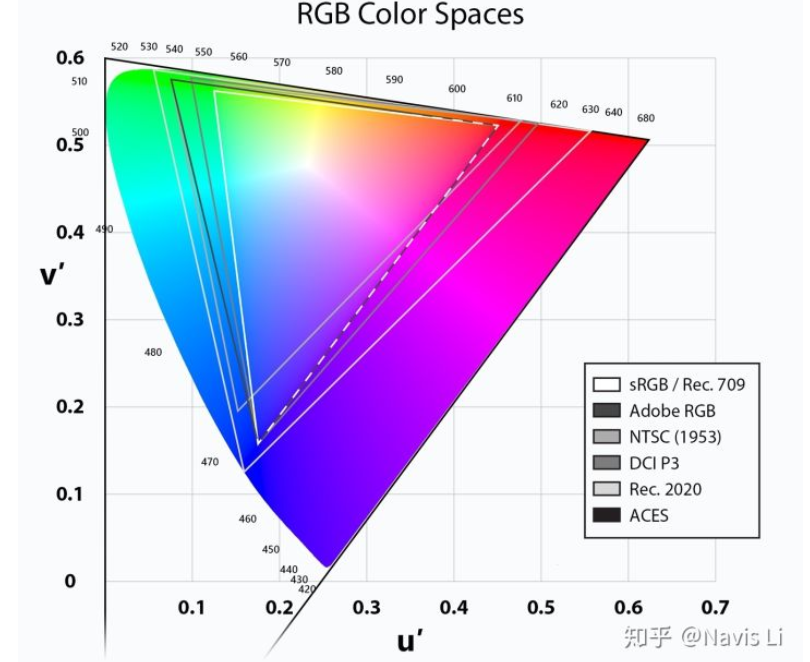
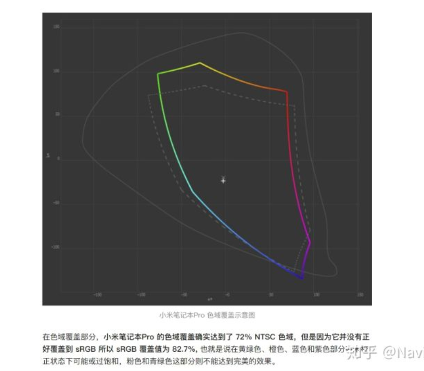

电脑屏幕素质判断指南
现在的笔记本电脑在追求 cpu gpu 等硬件性能的同时，对于屏幕的好坏也是一个重要的指标，下面探讨如何判断一个电脑屏幕的好坏。
只要指标有以下几个：像素密度、对比度、亮度、响应时间、刷新率、色域、可视角度
屏库网型号数据查询：http://www.panelook.cn/
屏幕显示在线检测：https://screen.51240.com/#welcome
型号确认
购买笔记本前，最好能够查询到对应屏幕的型号，如：京东方的 NV140FHM-N62 (BOE0718)，LG 的 LP156WF6-SPK3，三星的 ATNA56WR06-0。或者自己手头的电脑可以使用 AIDA64 等软件查看显示器信息：

根据型号信息到屏库网进行查询详细信息：http://www.panelook.cn/
液晶面板
液晶显示器的常用面板有TN（Twisted Nematic扭曲向列型）、IPS（In-Plane-Switching平面转换型）、VA（Vertical Alignment多象限垂直配向型）三种类型，前两种相对常见。
TN屏就是较早前常见的软屏，用手能按出水波纹，这是较早使用的LCD面板之一，目前也在大量使用，因为它的技术成熟，成本低。
TN面板的缺陷也很明显，输出灰阶少，原生只有6bit色彩，画面色彩偏白、可视角度小，显示效果一般，通过不同角度观看会出现偏色和亮度差别。因此，如果你从事设计、影视后期相关工作或在观影娱乐时对屏幕色彩有较高要求，不建议使用这种屏幕。
IPS屏面板较硬，用手指轻触屏幕，画面不会变形。IPS屏在色彩显示、可视角度等方面比TN面板好上不少，对于色彩的呈现范围与准确性也都有亮眼的表现，广视角是IPS面板的原生优势，不论哪个角度观看都不会产生色偏。目前跟影像处理有关的专业屏幕大多采用IPS面板。苹果也一直与IPS屏捆绑宣传，对于偏爱Mac的用户，IPS屏是一个不错的选择。
VA类面板也属于软屏，只要用手指轻触面板，显现梅花纹的是VA面板，出现水波纹的则是TN面板。VA面板是在中高端液晶显示器应用比较多的面板类型，富士通、三星、奇美电子、友达光电等面板企业均采用了这项面板技术。VA屏的特点是宽容度和对比度都更高，可达到3000:1的高对比度，画面中黑色和白色都更加纯净，且不会出现漏光等问题。
色域
sRGB, NTSC, 还有 AdobeRGB 和 P3, 是我们经常能在一些手机或者 PC 厂商标注屏幕色域时看到的标准。
真正对我们消费者有用的色域标准是 sRGB, Adobe RGB 以及 P3。
任何宣传 NTSC 色域的厂商和评测，非蠢即坏。
sRGB, NTSC, 还有 AdobeRGB 和 P3 色域的区别是什么？

而上图彩色的底则是我们人眼可见的所有颜色，每一个三角形都代表着这个色域能覆盖人眼可见颜色的区域。
对于 PC, Mac 或是 iOS & Android 来说，最为适合描述屏幕色域的就是 sRGB, Adobe RGB 和 P3。
对于 TV 或者家庭影院，最为适合描述屏幕色域的应该是 DCI - P3 和 Rec.2020。
所以如果用 NTSC 来评价一个屏幕能显示的颜色，对于消费者来说是没有任何直观价值的，因为我们不知道一个 NTSC 的色域覆盖等于多少 sRGB, Adobe RGB, P3 色域覆盖。也就是说我们买回来这一块只知道 NTSC 覆盖比率的屏幕，却完全不知道它能显示出多少图片、视频、电影、游戏创作者们想要给我们看到的颜色。更何况，由于 NTSC 不与任何一个当前沿用的色域标准重合，所以当你买到一个所谓 72% NTSC 屏幕的时候，它可能等于 80% sRGB, 也可能等于 100% sRGB, 没有定数，也就没有什么参考价值。
有很多无良厂家和媒体给出过这么一个等式：72% NTSC = 100sRGB. 并且以此来宣传自己的屏幕很优秀，能够用于专业的工作，不比当年 MacBook Pro 100% sRGB 差，理由就是用 NTSC 测试的话，当年的 MacBook Pro 屏幕也是 72% NTSC 色域。

但是在我们的测试中，一直强调 sRGB, AdobeRGB 和 P3 三个标准，所以这一块屏幕对于消费者真实的情况就展现了出来，实际上由于它的颜色覆盖不准，虽然是 72% NTSC, 但是偏离了 sRGB 标准，只能显示出 82% 的 sRGB 颜色。
如果用这样的屏幕进行专业的工作，那么结果只会是你经手的影像在黄绿色、橙色、蓝色和紫色部分不够饱和，颜色出现明显偏差。如果只是用这一块屏幕看东西，那么到没什么关系，只会是黄绿色、橙色、蓝色和紫色部分在未校正状态下可能或过饱和，粉色和青绿色这部分不够鲜艳。
经过了上边这个例子，相信大家也就知道，用 NTSC 衡量一块屏幕的色域就有多么可笑了，因为即便是覆盖 100% NTSC 色域，你看到的所有内容，都和这些内容的生产者想给你看到的完全不一样，用 NTSC 就好比带着一个只有动次打次低音完全没有其他细节的耳机，而且还声称自己是 True Music 一样。这也就是为什么我们不建议在任何面向消费者的场合使用 NTSC 描述屏幕色域。
可视角度
TN屏可视角度普遍较低，VA中等，IPS普遍较大，OLED有一对测会偏绿因此在该对侧的可视角度比其他两侧低
TN面板可视角度低的主要原因为，光线经过等差液晶组后，导致出光角度被限制。而IPS由于水平旋转后，液晶对透射的表面积不变，因此不会限制多少出光角度。
像素密度
像素密度就是 PPI，当让是越高越好，越高显示越细腻。一般分辨率低于 1080P 就不用考虑了。
对比度
通常使用静态对比度衡量，几年前笔记本屏幕大多为700：1，但近年来超过1000：1的屏幕开始铺货。
对比度自然也是越大越好，如果不足感觉画面是灰蒙蒙的一片。
亮度
单位cd/m2或者nit（尼特）笔记本至少要300nit，亮度很高可以调低，但亮度不够就不行了
响应时间
目前最低标准25ms，
刷新率
响应速度是指液晶的刷新速度，也就是一秒钟显示器物理可以显示多少画面，刷新率越高，屏幕拖尾效应越轻。
如果你有用笔记本玩FPS类游戏就直接选120/144赫兹。如果没有游戏需求，考虑60赫兹。
举例分析
LP156WF6-SPK3，LG生产，真IPS屏广视角，色域45% NTSC经过换算约为62.5%sRGB色域容积。该面板是17年主流屏幕，但当时对笔记本屏幕素质要求普及才刚开始，因此该屏幕放到今天就是垃圾屏。应用代表机型联想拯救者Y520/R720
NV156FHM-N61，京东方生产，ADS技术，也属于IPS范畴，色域标称72%NTSC色域，经过换算为100%sRGB色域容积。看上去这屏幕似乎很不错，但其实该屏幕色域覆盖不到90%。这导致有些面板开始滥竽充数，因此从该屏幕出现后，标准开始提高。应用机型有联想拯救者Y7000高色域版（2018），同方自家品牌公模Z2，小米笔记本Pro。
NV156FHM-N4G，也是京东方生产，色域标称72%NTSC色域，对比度1200：1，响应时间9ms典型值。但实测色域覆盖参差不齐，色域有97到85%不等的色域覆盖，功耗也高，那么这个屏幕素质怎么样呢？其实这个屏幕是好屏，因为这个屏幕的刷新率是144Hz，在色域上的表现有所牺牲。总体观感比N61好很多。
LQ156M1JW03，夏普生产，IGZO技术。对比度1000：1，响应时间8ms典型值，色域容积72%NTSC。那么这个屏幕素质如何呢？这个屏幕是FHD中的极品，它不仅有240Hz刷新率，并且经过校色后可以标称100%sRGB覆盖，色准也非常优秀。应用机型有技嘉AERO 15 Classic，华硕ROG GX502(冰刃3s)，华硕ROG Strix 枪神3。
ATNA56WR06-0，三星生产，UHD面板，对比度爆表，色域爆表无论sRGB，Adobe RGB，DCI-P3都是至少95%色域覆盖，响应时间最大1ms，但色准稍差，调光方式为低频PWM。这个面板技术想必大家能推理出来吧？没错就是AMOLED。应用机型截至目前只有新版技嘉AERO15-XA。